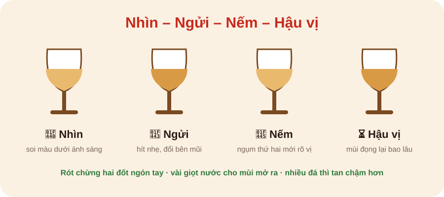

Rượu – bia
Thưởng thức whisky mà không say: một ly nhỏ, ba lần ngửi, vài giọt nước

Các bác chắc từng thấy người ta uống whisky mà cứ ngửi ngửi như thử nước hoa. Đọc sách xong em mới hiểu: người biết thưởng thức uống chậm và uống ít hơn người uống cho say rất nhiều – thế là em ưng ngay cái kiểu uống này 😂
Mũi làm phần lớn công việc
Sách viết: cái mình gọi là “vị” thật ra là mũi và lưỡi cộng lại, mà mũi nhận ra phần lớn mùi hương. Lưỡi chỉ biết ngọt, mặn, chua, đắng, umami. Nên muốn “thưởng thức” thì phải ngửi trước đã.
Hay nữa là mùi gắn với ký ức: có người ngửi whisky thấy mùi cam, mùi mật ong, mùi bánh quy, mùi khói bếp… Không gọi được tên mùi cũng chẳng sao, sách bảo cứ từ từ, tập dần.
Bốn bước của em
- Nhìn – rót ít (chừng hai đốt ngón tay), soi lên ánh sáng xem màu vàng nhạt hay hổ phách sẫm.
- Ngửi – đưa mũi vào miệng ly, hít nhẹ, đừng hít mạnh kẻo cồn xộc lên cay mũi. Thử chuyển ly qua lại giữa hai lỗ mũi.
- Nếm – nhấp một ngụm nhỏ. Ngụm đầu chỉ để “đánh thức” miệng với cồn, ngụm thứ hai mới cảm nhận được nhiều nhất. Ngậm lâu một chút cho rượu chạm khắp lưỡi.
- Hậu vị – nuốt rồi, để ý xem mùi còn đọng lại bao lâu, ấm hay khô, ngọt hay khói.
Ly gì?
Ly miệng hẹp, thân phình (hình bông tulip) giữ mùi tốt hơn cốc thấp miệng rộng. Không có ly chuyên thì dùng ly uống vang nhỏ cũng được.
Thêm nước hay không?
Tùy thích. Sách nói vài giọt nước làm mùi “mở” ra, các chuyên gia pha rượu còn pha một nửa nước khi chấm điểm. Uống không pha không có nghĩa là sành hơn. Em thì thấy pha thêm nước còn một cái lợi: nhạt cồn đi, uống chậm hơn.
Cho đá: càng nhiều đá càng ít tan
Nghe ngược nhưng đúng: sách giải thích cho nhiều đá thì đá giữ lạnh cho nhau nên tan chậm hơn, ly rượu không bị loãng toẹt. Cho một viên lẻ loi thì tan nhanh nhất.
Những điều nên giữ
- Ăn trước khi uống, có đồ nhắm, có cốc nước lọc bên cạnh.
- Một ly nhỏ là đủ để thưởng thức. Không “trăm phần trăm”, không ép ai.
- Đã uống thì không lái xe – luật cấm hẳn việc điều khiển phương tiện khi có nồng độ cồn. Các vợ cứ mạnh dạn giữ chìa khóa xe của chồng nhé 😜
- Không uống khi đang mang bầu, cho con bú, đang dùng thuốc, dưới 18 tuổi.
- Nhớ rằng Tổ chức Y tế Thế giới nói không có mức uống nào an toàn tuyệt đối – nên ít được chừng nào hay chừng ấy.
Muốn tập ghi chép mùi vị, so sánh các loại, làm bài “đố mũi” vui vui thì các bác chờ ứng dụng Thưởng thức rượu bia (sắp mở tại ruoubia.bepcoky.com) nhé ạ!
Bài viết để tìm hiểu, không quảng cáo cho loại rượu hay thương hiệu nào. Uống rượu bia có thể gây tai nạn giao thông và ảnh hưởng sức khỏe thai nhi; người dưới 18 tuổi không uống rượu bia.
Em tham khảo: The Pocket Guide To Whisky (tr. 17–19); Everything You Need to Know About Whisky; Luật Phòng, chống tác hại của rượu, bia 2019; WHO châu Âu (04/01/2023).
Kinh nghiệm và kiến thức bếp nhà, em viết lại theo cách hiểu của em – không thay lời khuyên của bác sĩ, chuyên gia dinh dưỡng. Thấy chỗ nào chưa đúng, các bác nhắn em sửa nhé.